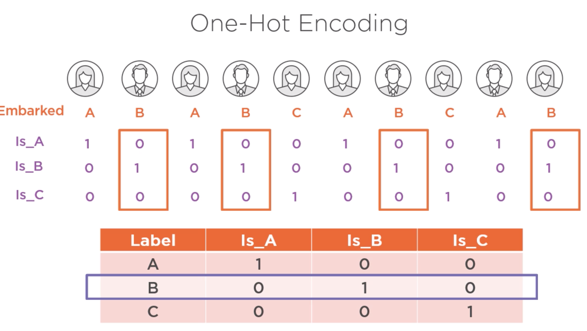

Feature engineering (preparación de variables)
Contents
Feature engineering (preparación de variables)¶
Definición¶
Proceso de aplicación del conocimiento de los datos de cierto ámbito/dominio para seleccionar o crear variables que mejoren el desempeño de los modelos predictivos. Se recomienda realizar luego del Análisis Exploratorio de Datos.
Técnicas¶
Imputación, manejo de valors faltantes (eliminar o encontrar un valor adecuado)
Manejo de valores atípicos, eliminarlos o preservarlos.
Binning, agrupar valores en clases típicamente para convertir variables contínuas en discretas.
Transformación logaritmica, para lidiar con distribuciones muy asimétricas
One-hot enconding, convertir variables nominales en 0s y 1s
Separación de valor (Feature Split), ej convertir nombre completo en nombre y apellido.
Ajuste de escala., para ubicar variables en rangos recomendados
{kind=link}

import os
import pandas as pd
import numpy as np
import matplotlib.pyplot as plt
import seaborn as sns
df = pd.read_csv(os.path.join("./csv/diabetes.csv"))
df.head()
---------------------------------------------------------------------------
ModuleNotFoundError Traceback (most recent call last)
Input In [1], in <module>
2 import pandas as pd
3 import numpy as np
----> 4 import matplotlib.pyplot as plt
5 import seaborn as sns
7 df = pd.read_csv(os.path.join("./csv/diabetes.csv"))
ModuleNotFoundError: No module named 'matplotlib'
Imputación¶
#df.isnull()
df.describe(include='all')
| Pregnancies | Glucose | BloodPressure | SkinThickness | Insulin | BMI | DiabetesPedigreeFunction | Age | Outcome | |
|---|---|---|---|---|---|---|---|---|---|
| count | 768.000000 | 768.000000 | 768.000000 | 768.000000 | 768.000000 | 768.000000 | 768.000000 | 768.000000 | 768.000000 |
| mean | 3.845052 | 120.894531 | 69.105469 | 20.536458 | 79.799479 | 31.992578 | 0.471876 | 33.240885 | 0.348958 |
| std | 3.369578 | 31.972618 | 19.355807 | 15.952218 | 115.244002 | 7.884160 | 0.331329 | 11.760232 | 0.476951 |
| min | 0.000000 | 0.000000 | 0.000000 | 0.000000 | 0.000000 | 0.000000 | 0.078000 | 21.000000 | 0.000000 |
| 25% | 1.000000 | 99.000000 | 62.000000 | 0.000000 | 0.000000 | 27.300000 | 0.243750 | 24.000000 | 0.000000 |
| 50% | 3.000000 | 117.000000 | 72.000000 | 23.000000 | 30.500000 | 32.000000 | 0.372500 | 29.000000 | 0.000000 |
| 75% | 6.000000 | 140.250000 | 80.000000 | 32.000000 | 127.250000 | 36.600000 | 0.626250 | 41.000000 | 1.000000 |
| max | 17.000000 | 199.000000 | 122.000000 | 99.000000 | 846.000000 | 67.100000 | 2.420000 | 81.000000 | 1.000000 |
df.loc[3,'Age'] = np.nan
df.head()
| Pregnancies | Glucose | BloodPressure | SkinThickness | Insulin | BMI | DiabetesPedigreeFunction | Age | Outcome | |
|---|---|---|---|---|---|---|---|---|---|
| 0 | 6 | 148 | 72 | 35 | 0 | 33.6 | 0.627 | 50.0 | 1 |
| 1 | 1 | 85 | 66 | 29 | 0 | 26.6 | 0.351 | 31.0 | 0 |
| 2 | 8 | 183 | 64 | 0 | 0 | 23.3 | 0.672 | 32.0 | 1 |
| 3 | 1 | 89 | 66 | 23 | 94 | 28.1 | 0.167 | NaN | 0 |
| 4 | 0 | 137 | 40 | 35 | 168 | 43.1 | 2.288 | 33.0 | 1 |
df.describe(include='all')
| Pregnancies | Glucose | BloodPressure | SkinThickness | Insulin | BMI | DiabetesPedigreeFunction | Age | Outcome | |
|---|---|---|---|---|---|---|---|---|---|
| count | 768.000000 | 768.000000 | 768.000000 | 768.000000 | 768.000000 | 768.000000 | 768.000000 | 767.000000 | 768.000000 |
| mean | 3.845052 | 120.894531 | 69.105469 | 20.536458 | 79.799479 | 31.992578 | 0.471876 | 33.256845 | 0.348958 |
| std | 3.369578 | 31.972618 | 19.355807 | 15.952218 | 115.244002 | 7.884160 | 0.331329 | 11.759580 | 0.476951 |
| min | 0.000000 | 0.000000 | 0.000000 | 0.000000 | 0.000000 | 0.000000 | 0.078000 | 21.000000 | 0.000000 |
| 25% | 1.000000 | 99.000000 | 62.000000 | 0.000000 | 0.000000 | 27.300000 | 0.243750 | 24.000000 | 0.000000 |
| 50% | 3.000000 | 117.000000 | 72.000000 | 23.000000 | 30.500000 | 32.000000 | 0.372500 | 29.000000 | 0.000000 |
| 75% | 6.000000 | 140.250000 | 80.000000 | 32.000000 | 127.250000 | 36.600000 | 0.626250 | 41.000000 | 1.000000 |
| max | 17.000000 | 199.000000 | 122.000000 | 99.000000 | 846.000000 | 67.100000 | 2.420000 | 81.000000 | 1.000000 |
#df['Age'].isnull()
df.loc[df['Age'].isnull()]
| Pregnancies | Glucose | BloodPressure | SkinThickness | Insulin | BMI | DiabetesPedigreeFunction | Age | Outcome | |
|---|---|---|---|---|---|---|---|---|---|
| 3 | 1 | 89 | 66 | 23 | 94 | 28.1 | 0.167 | NaN | 0 |
df.shape
(768, 9)
#Eliminación de valores faltantes
df.dropna(how='all').shape
(768, 9)
df.dropna(subset=['Insulin', 'Age'], how='any').shape
(767, 9)
df.head()
| Pregnancies | Glucose | BloodPressure | SkinThickness | Insulin | BMI | DiabetesPedigreeFunction | Age | Outcome | |
|---|---|---|---|---|---|---|---|---|---|
| 0 | 6 | 148 | 72 | 35 | 0 | 33.6 | 0.627 | 50.0 | 1 |
| 1 | 1 | 85 | 66 | 29 | 0 | 26.6 | 0.351 | 31.0 | 0 |
| 2 | 8 | 183 | 64 | 0 | 0 | 23.3 | 0.672 | 32.0 | 1 |
| 3 | 1 | 89 | 66 | 23 | 94 | 28.1 | 0.167 | NaN | 0 |
| 4 | 0 | 137 | 40 | 35 | 168 | 43.1 | 2.288 | 33.0 | 1 |
df.dropna(subset=['Insulin', 'Age'], how='any', inplace=True )
df.head()
| Pregnancies | Glucose | BloodPressure | SkinThickness | Insulin | BMI | DiabetesPedigreeFunction | Age | Outcome | |
|---|---|---|---|---|---|---|---|---|---|
| 0 | 6 | 148 | 72 | 35 | 0 | 33.6 | 0.627 | 50.0 | 1 |
| 1 | 1 | 85 | 66 | 29 | 0 | 26.6 | 0.351 | 31.0 | 0 |
| 2 | 8 | 183 | 64 | 0 | 0 | 23.3 | 0.672 | 32.0 | 1 |
| 4 | 0 | 137 | 40 | 35 | 168 | 43.1 | 2.288 | 33.0 | 1 |
| 5 | 5 | 116 | 74 | 0 | 0 | 25.6 | 0.201 | 30.0 | 0 |
#Asignación de valores
df = pd.read_csv(os.path.join("diabetes.csv"))
df.head()
| Pregnancies | Glucose | BloodPressure | SkinThickness | Insulin | BMI | DiabetesPedigreeFunction | Age | Outcome | |
|---|---|---|---|---|---|---|---|---|---|
| 0 | 6 | 148 | 72 | 35 | 0 | 33.6 | 0.627 | 50 | 1 |
| 1 | 1 | 85 | 66 | 29 | 0 | 26.6 | 0.351 | 31 | 0 |
| 2 | 8 | 183 | 64 | 0 | 0 | 23.3 | 0.672 | 32 | 1 |
| 3 | 1 | 89 | 66 | 23 | 94 | 28.1 | 0.167 | 21 | 0 |
| 4 | 0 | 137 | 40 | 35 | 168 | 43.1 | 2.288 | 33 | 1 |
df.loc[3,'Age'] = np.nan
df.head()
| Pregnancies | Glucose | BloodPressure | SkinThickness | Insulin | BMI | DiabetesPedigreeFunction | Age | Outcome | |
|---|---|---|---|---|---|---|---|---|---|
| 0 | 6 | 148 | 72 | 35 | 0 | 33.6 | 0.627 | 50.0 | 1 |
| 1 | 1 | 85 | 66 | 29 | 0 | 26.6 | 0.351 | 31.0 | 0 |
| 2 | 8 | 183 | 64 | 0 | 0 | 23.3 | 0.672 | 32.0 | 1 |
| 3 | 1 | 89 | 66 | 23 | 94 | 28.1 | 0.167 | NaN | 0 |
| 4 | 0 | 137 | 40 | 35 | 168 | 43.1 | 2.288 | 33.0 | 1 |
#df['Age'].fillna(0, inplace=True) #Casi nunca es buena idea!
df['Age'].fillna(round(df['Age'].mean()), inplace=True) #Pocas veces es buena idea!
df.head()
| Pregnancies | Glucose | BloodPressure | SkinThickness | Insulin | BMI | DiabetesPedigreeFunction | Age | Outcome | |
|---|---|---|---|---|---|---|---|---|---|
| 0 | 6 | 148 | 72 | 35 | 0 | 33.6 | 0.627 | 50.0 | 1 |
| 1 | 1 | 85 | 66 | 29 | 0 | 26.6 | 0.351 | 31.0 | 0 |
| 2 | 8 | 183 | 64 | 0 | 0 | 23.3 | 0.672 | 32.0 | 1 |
| 3 | 1 | 89 | 66 | 23 | 94 | 28.1 | 0.167 | 33.0 | 0 |
| 4 | 0 | 137 | 40 | 35 | 168 | 43.1 | 2.288 | 33.0 | 1 |
df = pd.read_csv(os.path.join("diabetes.csv"))
df.loc[3,'Age'] = np.nan
df.head()
#df.shape
| Pregnancies | Glucose | BloodPressure | SkinThickness | Insulin | BMI | DiabetesPedigreeFunction | Age | Outcome | |
|---|---|---|---|---|---|---|---|---|---|
| 0 | 6 | 148 | 72 | 35 | 0 | 33.6 | 0.627 | 50.0 | 1 |
| 1 | 1 | 85 | 66 | 29 | 0 | 26.6 | 0.351 | 31.0 | 0 |
| 2 | 8 | 183 | 64 | 0 | 0 | 23.3 | 0.672 | 32.0 | 1 |
| 3 | 1 | 89 | 66 | 23 | 94 | 28.1 | 0.167 | NaN | 0 |
| 4 | 0 | 137 | 40 | 35 | 168 | 43.1 | 2.288 | 33.0 | 1 |
#df.loc[df['Age'].notnull(),].head()
por_embarazos = df.groupby('Pregnancies')
por_embarazos
<pandas.core.groupby.generic.DataFrameGroupBy object at 0x7f9823812490>
por_embarazos.groups
{0: Int64Index([ 4, 16, 45, 57, 58, 59, 66, 78, 83, 102,
...
649, 677, 681, 682, 697, 713, 727, 736, 753, 757],
dtype='int64', length=111),
1: Int64Index([ 1, 3, 13, 18, 19, 27, 46, 50, 51, 55,
...
726, 739, 742, 746, 747, 751, 755, 758, 766, 767],
dtype='int64', length=135),
2: Int64Index([ 8, 38, 47, 60, 63, 67, 70, 79, 81, 85,
...
707, 709, 728, 729, 732, 733, 734, 738, 760, 764],
dtype='int64', length=103),
3: Int64Index([ 6, 20, 31, 32, 40, 80, 108, 110, 126, 132, 140, 166, 169,
190, 197, 227, 234, 242, 256, 260, 261, 263, 272, 304, 313, 316,
317, 318, 321, 347, 348, 352, 354, 368, 370, 389, 396, 398, 399,
415, 419, 431, 480, 494, 501, 504, 514, 515, 521, 524, 525, 527,
539, 541, 551, 570, 572, 588, 592, 610, 611, 615, 644, 659, 673,
678, 686, 696, 710, 714, 716, 730, 741, 748, 752],
dtype='int64'),
4: Int64Index([ 10, 35, 39, 69, 73, 91, 93, 107, 113, 115, 118, 119, 130,
144, 151, 160, 167, 168, 184, 198, 199, 228, 230, 233, 235, 241,
262, 264, 288, 320, 350, 351, 363, 364, 378, 393, 394, 400, 406,
417, 425, 442, 444, 474, 479, 482, 488, 492, 493, 535, 543, 547,
549, 568, 604, 625, 629, 641, 643, 666, 683, 698, 699, 704, 720,
725, 735, 750],
dtype='int64'),
5: Int64Index([ 5, 14, 29, 30, 52, 62, 65, 71, 77, 84, 116, 117, 123,
139, 141, 148, 178, 179, 183, 189, 195, 205, 207, 216, 218, 219,
265, 278, 286, 289, 302, 303, 337, 343, 349, 360, 361, 362, 365,
386, 388, 391, 402, 404, 437, 457, 463, 496, 546, 628, 636, 652,
684, 711, 719, 723, 765],
dtype='int64'),
6: Int64Index([ 0, 33, 95, 98, 121, 165, 170, 171, 176, 180, 204, 217, 231,
243, 295, 310, 319, 329, 366, 401, 410, 439, 469, 495, 499, 502,
519, 522, 533, 552, 560, 563, 567, 576, 581, 587, 594, 601, 613,
616, 622, 642, 664, 668, 670, 675, 701, 705, 749, 759],
dtype='int64'),
7: Int64Index([ 15, 17, 22, 26, 41, 42, 44, 48, 49, 54, 56, 64, 76,
82, 92, 114, 155, 161, 185, 192, 209, 212, 222, 223, 236, 276,
282, 283, 285, 314, 339, 473, 477, 498, 503, 517, 555, 603, 612,
630, 638, 693, 695, 715, 756],
dtype='int64'),
8: Int64Index([ 2, 9, 21, 53, 61, 111, 133, 154, 175, 186, 188, 194, 206,
299, 330, 344, 345, 387, 408, 424, 443, 462, 468, 478, 489, 509,
540, 545, 557, 583, 584, 586, 662, 674, 690, 731, 737, 754],
dtype='int64'),
9: Int64Index([ 23, 37, 43, 131, 146, 152, 191, 214, 238, 245, 248, 250, 338,
355, 403, 459, 460, 512, 516, 523, 618, 663, 669, 676, 708, 743,
761, 762],
dtype='int64'),
10: Int64Index([ 7, 11, 12, 25, 34, 143, 246, 270, 281, 306, 327, 458, 464,
505, 542, 578, 634, 660, 667, 672, 706, 712, 717, 763],
dtype='int64'),
11: Int64Index([24, 36, 193, 259, 558, 559, 590, 614, 648, 658, 740], dtype='int64'),
12: Int64Index([215, 254, 333, 358, 375, 436, 510, 582, 745], dtype='int64'),
13: Int64Index([28, 72, 86, 274, 323, 357, 518, 635, 691, 744], dtype='int64'),
14: Int64Index([298, 455], dtype='int64'),
15: Int64Index([88], dtype='int64'),
17: Int64Index([159], dtype='int64')}
Se recomienda emplear la métrica de tendencia central que sea menos afectada por valores atípicos:¶
La Mediana.
#por_embarazos.agg({'Age': ['mean','median']})
por_embarazos.agg({'Age': 'median'})
| Age | |
|---|---|
| Pregnancies | |
| 0 | 25.0 |
| 1 | 24.0 |
| 2 | 25.0 |
| 3 | 27.0 |
| 4 | 30.0 |
| 5 | 36.0 |
| 6 | 36.5 |
| 7 | 41.0 |
| 8 | 43.0 |
| 9 | 44.0 |
| 10 | 40.5 |
| 11 | 45.0 |
| 12 | 46.0 |
| 13 | 43.5 |
| 14 | 42.0 |
| 15 | 43.0 |
| 17 | 47.0 |
El gráfico de caja muestra la media o mediana?¶
df[df['Age'].notnull()].boxplot('Age','Pregnancies')
<matplotlib.axes._subplots.AxesSubplot at 0x7f9823826c50>

por_embarazos
<pandas.core.groupby.generic.DataFrameGroupBy object at 0x7f9823812490>
por_embarazos['Age']
<pandas.core.groupby.generic.SeriesGroupBy object at 0x7f9822e10050>
por_embarazos['Age'].transform('median')
0 36.5
1 24.0
2 43.0
3 24.0
4 25.0
...
763 40.5
764 25.0
765 36.0
766 24.0
767 24.0
Name: Age, Length: 768, dtype: float64
df['Age'].fillna(por_embarazos['Age'].transform('median'), inplace=True)
df.head()
| Pregnancies | Glucose | BloodPressure | SkinThickness | Insulin | BMI | DiabetesPedigreeFunction | Age | Outcome | |
|---|---|---|---|---|---|---|---|---|---|
| 0 | 6 | 148 | 72 | 35 | 0 | 33.6 | 0.627 | 50.0 | 1 |
| 1 | 1 | 85 | 66 | 29 | 0 | 26.6 | 0.351 | 31.0 | 0 |
| 2 | 8 | 183 | 64 | 0 | 0 | 23.3 | 0.672 | 32.0 | 1 |
| 3 | 1 | 89 | 66 | 23 | 94 | 28.1 | 0.167 | 24.0 | 0 |
| 4 | 0 | 137 | 40 | 35 | 168 | 43.1 | 2.288 | 33.0 | 1 |
Valores atípicos¶
df = pd.read_csv(os.path.join("diabetes.csv"))
df['Age'].plot.box()
<matplotlib.axes._subplots.AxesSubplot at 0x7f9823814fd0>

# Identificación basada en percentiles (también existe la basada en la desviación estándar)
q3 = df['Age'].quantile(.75)
q1 = df['Age'].quantile(.25)
IQR = q3 - q1
df.loc[(df['Age'] > q3 + 1.5 * IQR) | (df['Age'] < q1 - 1.5 * IQR)]
| Pregnancies | Glucose | BloodPressure | SkinThickness | Insulin | BMI | DiabetesPedigreeFunction | Age | Outcome | |
|---|---|---|---|---|---|---|---|---|---|
| 123 | 5 | 132 | 80 | 0 | 0 | 26.8 | 0.186 | 69 | 0 |
| 363 | 4 | 146 | 78 | 0 | 0 | 38.5 | 0.520 | 67 | 1 |
| 453 | 2 | 119 | 0 | 0 | 0 | 19.6 | 0.832 | 72 | 0 |
| 459 | 9 | 134 | 74 | 33 | 60 | 25.9 | 0.460 | 81 | 0 |
| 489 | 8 | 194 | 80 | 0 | 0 | 26.1 | 0.551 | 67 | 0 |
| 537 | 0 | 57 | 60 | 0 | 0 | 21.7 | 0.735 | 67 | 0 |
| 666 | 4 | 145 | 82 | 18 | 0 | 32.5 | 0.235 | 70 | 1 |
| 674 | 8 | 91 | 82 | 0 | 0 | 35.6 | 0.587 | 68 | 0 |
| 684 | 5 | 136 | 82 | 0 | 0 | 0.0 | 0.640 | 69 | 0 |
#df = df.loc[(df['Age'] <= q3 + 1.5 * IQR) & (df['Age'] >= q1 - 1.5 * IQR)]
df.loc[(df['Age'] <= q3 + 1.5 * IQR) & (df['Age'] >= q1 - 1.5 * IQR)].shape
(759, 9)
Binning¶

df = pd.read_csv(os.path.join("diabetes.csv"))
df.describe()
| Pregnancies | Glucose | BloodPressure | SkinThickness | Insulin | BMI | DiabetesPedigreeFunction | Age | Outcome | |
|---|---|---|---|---|---|---|---|---|---|
| count | 768.000000 | 768.000000 | 768.000000 | 768.000000 | 768.000000 | 768.000000 | 768.000000 | 768.000000 | 768.000000 |
| mean | 3.845052 | 120.894531 | 69.105469 | 20.536458 | 79.799479 | 31.992578 | 0.471876 | 33.240885 | 0.348958 |
| std | 3.369578 | 31.972618 | 19.355807 | 15.952218 | 115.244002 | 7.884160 | 0.331329 | 11.760232 | 0.476951 |
| min | 0.000000 | 0.000000 | 0.000000 | 0.000000 | 0.000000 | 0.000000 | 0.078000 | 21.000000 | 0.000000 |
| 25% | 1.000000 | 99.000000 | 62.000000 | 0.000000 | 0.000000 | 27.300000 | 0.243750 | 24.000000 | 0.000000 |
| 50% | 3.000000 | 117.000000 | 72.000000 | 23.000000 | 30.500000 | 32.000000 | 0.372500 | 29.000000 | 0.000000 |
| 75% | 6.000000 | 140.250000 | 80.000000 | 32.000000 | 127.250000 | 36.600000 | 0.626250 | 41.000000 | 1.000000 |
| max | 17.000000 | 199.000000 | 122.000000 | 99.000000 | 846.000000 | 67.100000 | 2.420000 | 81.000000 | 1.000000 |
df['YoungAdult'] = df['Age'].map(lambda age: 1 if age <= 35 else 0 ) # age <= 35 ? 1 : 0
df.head()
| Pregnancies | Glucose | BloodPressure | SkinThickness | Insulin | BMI | DiabetesPedigreeFunction | Age | Outcome | YoungAdult | |
|---|---|---|---|---|---|---|---|---|---|---|
| 0 | 6 | 148 | 72 | 35 | 0 | 33.6 | 0.627 | 50 | 1 | 0 |
| 1 | 1 | 85 | 66 | 29 | 0 | 26.6 | 0.351 | 31 | 0 | 1 |
| 2 | 8 | 183 | 64 | 0 | 0 | 23.3 | 0.672 | 32 | 1 | 1 |
| 3 | 1 | 89 | 66 | 23 | 94 | 28.1 | 0.167 | 21 | 0 | 1 |
| 4 | 0 | 137 | 40 | 35 | 168 | 43.1 | 2.288 | 33 | 1 | 1 |
df.loc[df['YoungAdult'] == 0].shape
(270, 10)
df.loc[df['YoungAdult'] == 1].shape
(498, 10)
#df['BloodPressure_Bin'] = pd.qcut(df['BloodPressure'], 4, labels=['very_low','low','high','very_high'])
pd.qcut(df['BloodPressure'], 4, labels=['very_low','low','high','very_high'])
0 low
1 low
2 low
3 low
4 very_low
...
763 high
764 low
765 low
766 very_low
767 low
Name: BloodPressure, Length: 768, dtype: category
Categories (4, object): [very_low < low < high < very_high]
df['AgeCategogy'] = pd.cut(df['Age'],bins=[0, 35, 55, 120], labels=['young', 'middle', 'old'])
df.head()
| Pregnancies | Glucose | BloodPressure | SkinThickness | Insulin | BMI | DiabetesPedigreeFunction | Age | Outcome | YoungAdult | AgeCategogy | |
|---|---|---|---|---|---|---|---|---|---|---|---|
| 0 | 6 | 148 | 72 | 35 | 0 | 33.6 | 0.627 | 50 | 1 | 0 | middle |
| 1 | 1 | 85 | 66 | 29 | 0 | 26.6 | 0.351 | 31 | 0 | 1 | young |
| 2 | 8 | 183 | 64 | 0 | 0 | 23.3 | 0.672 | 32 | 1 | 1 | young |
| 3 | 1 | 89 | 66 | 23 | 94 | 28.1 | 0.167 | 21 | 0 | 1 | young |
| 4 | 0 | 137 | 40 | 35 | 168 | 43.1 | 2.288 | 33 | 1 | 1 | young |
Transformación logarítmica¶
Recuerde que log(0) = infinito
df['Pregnancies'].plot.density(color='c')
<matplotlib.axes._subplots.AxesSubplot at 0x7f9822cc9e90>

df['Pregnancies'].skew()
0.9016739791518588
np.log(df['Pregnancies'] + 1.0).plot.density(color='c')
<matplotlib.axes._subplots.AxesSubplot at 0x7f9822bc6950>

One-hot encoding¶
{kind=link}
df = pd.read_csv(os.path.join("diabetes.csv"))
df['AgeCategogy'] = pd.cut(df['Age'],bins=[0, 35, 55, 120], labels=['young', 'middle', 'old'])
df.head()
| Pregnancies | Glucose | BloodPressure | SkinThickness | Insulin | BMI | DiabetesPedigreeFunction | Age | Outcome | AgeCategogy | |
|---|---|---|---|---|---|---|---|---|---|---|
| 0 | 6 | 148 | 72 | 35 | 0 | 33.6 | 0.627 | 50 | 1 | middle |
| 1 | 1 | 85 | 66 | 29 | 0 | 26.6 | 0.351 | 31 | 0 | young |
| 2 | 8 | 183 | 64 | 0 | 0 | 23.3 | 0.672 | 32 | 1 | young |
| 3 | 1 | 89 | 66 | 23 | 94 | 28.1 | 0.167 | 21 | 0 | young |
| 4 | 0 | 137 | 40 | 35 | 168 | 43.1 | 2.288 | 33 | 1 | young |
df = pd.get_dummies(df,columns=['AgeCategogy'])
df.head()
| Pregnancies | Glucose | BloodPressure | SkinThickness | Insulin | BMI | DiabetesPedigreeFunction | Age | Outcome | AgeCategogy_young | AgeCategogy_middle | AgeCategogy_old | |
|---|---|---|---|---|---|---|---|---|---|---|---|---|
| 0 | 6 | 148 | 72 | 35 | 0 | 33.6 | 0.627 | 50 | 1 | 0 | 1 | 0 |
| 1 | 1 | 85 | 66 | 29 | 0 | 26.6 | 0.351 | 31 | 0 | 1 | 0 | 0 |
| 2 | 8 | 183 | 64 | 0 | 0 | 23.3 | 0.672 | 32 | 1 | 1 | 0 | 0 |
| 3 | 1 | 89 | 66 | 23 | 94 | 28.1 | 0.167 | 21 | 0 | 1 | 0 | 0 |
| 4 | 0 | 137 | 40 | 35 | 168 | 43.1 | 2.288 | 33 | 1 | 1 | 0 | 0 |
Separación de valores¶
df = pd.DataFrame({'Team':['Eagles', 'Bears', 'Raptors', 'Hornets', 'Bees', 'Lions'],
'City':['Rome', 'Helsinki', 'Hong Kong', 'Hong Kong', 'Rome', 'Rome'],
'Games':[12, 15, 23, 18, 21, 8],
'MVP_Player': ['John Stuart', 'Leo Da Vinci', 'Mike Donatello', 'Raphael Dolce', 'Bruce Lee', 'Mahatma Gandhi']})
df.head()
| Team | City | Games | MVP_Player | |
|---|---|---|---|---|
| 0 | Eagles | Rome | 12 | John Stuart |
| 1 | Bears | Helsinki | 15 | Leo Da Vinci |
| 2 | Raptors | Hong Kong | 23 | Mike Donatello |
| 3 | Hornets | Hong Kong | 18 | Raphael Dolce |
| 4 | Bees | Rome | 21 | Bruce Lee |
def extract_name(fullname):
return fullname.split(' ')[0]
#df['Name'] = df['MVP_Player'].apply(lambda fullname: fullname.split(' ')[0])
df['Name'] = df.apply(lambda row: row['MVP_Player'].split(' ')[0], axis = 1 )
df['Name'] = df['MVP_Player'].apply(extract_name)
df.head()
| Team | City | Games | MVP_Player | Name | |
|---|---|---|---|---|---|
| 0 | Eagles | Rome | 12 | John Stuart | John |
| 1 | Bears | Helsinki | 15 | Leo Da Vinci | Leo |
| 2 | Raptors | Hong Kong | 23 | Mike Donatello | Mike |
| 3 | Hornets | Hong Kong | 18 | Raphael Dolce | Raphael |
| 4 | Bees | Rome | 21 | Bruce Lee | Bruce |
Ajuste de escala¶
El ajuste de escala es una transformación aplicada a variables numéricas que tiene como objetivo asegurar que los valores de diferentes variables estén en el mismo rango. Esta transformación es necesaria cuando se emplean algoritmos sensibles a las magnitudes de las variables.
El método de ajuste más utilizado se basa en el cálculo del valor z (puntuación estándar, z-score); genera valores centrados en cero y con una desviación estándard igual a 1.
El valor Z mide las desviaciones estándar de distancia entre un valor y la media.
from sklearn.datasets import load_boston
from sklearn.preprocessing import StandardScaler
boston_dataset = load_boston()
df = pd.DataFrame(boston_dataset.data, columns=boston_dataset.feature_names)
df.head()
| CRIM | ZN | INDUS | CHAS | NOX | RM | AGE | DIS | RAD | TAX | PTRATIO | B | LSTAT | |
|---|---|---|---|---|---|---|---|---|---|---|---|---|---|
| 0 | 0.00632 | 18.0 | 2.31 | 0.0 | 0.538 | 6.575 | 65.2 | 4.0900 | 1.0 | 296.0 | 15.3 | 396.90 | 4.98 |
| 1 | 0.02731 | 0.0 | 7.07 | 0.0 | 0.469 | 6.421 | 78.9 | 4.9671 | 2.0 | 242.0 | 17.8 | 396.90 | 9.14 |
| 2 | 0.02729 | 0.0 | 7.07 | 0.0 | 0.469 | 7.185 | 61.1 | 4.9671 | 2.0 | 242.0 | 17.8 | 392.83 | 4.03 |
| 3 | 0.03237 | 0.0 | 2.18 | 0.0 | 0.458 | 6.998 | 45.8 | 6.0622 | 3.0 | 222.0 | 18.7 | 394.63 | 2.94 |
| 4 | 0.06905 | 0.0 | 2.18 | 0.0 | 0.458 | 7.147 | 54.2 | 6.0622 | 3.0 | 222.0 | 18.7 | 396.90 | 5.33 |
scaler = StandardScaler()
scaler.fit(df)
StandardScaler(copy=True, with_mean=True, with_std=True)
array = scaler.transform(df)
array
array([[-0.41978194, 0.28482986, -1.2879095 , ..., -1.45900038,
0.44105193, -1.0755623 ],
[-0.41733926, -0.48772236, -0.59338101, ..., -0.30309415,
0.44105193, -0.49243937],
[-0.41734159, -0.48772236, -0.59338101, ..., -0.30309415,
0.39642699, -1.2087274 ],
...,
[-0.41344658, -0.48772236, 0.11573841, ..., 1.17646583,
0.44105193, -0.98304761],
[-0.40776407, -0.48772236, 0.11573841, ..., 1.17646583,
0.4032249 , -0.86530163],
[-0.41500016, -0.48772236, 0.11573841, ..., 1.17646583,
0.44105193, -0.66905833]])
df_scaled = pd.DataFrame(array, columns=df.columns)
df_scaled.head()
| CRIM | ZN | INDUS | CHAS | NOX | RM | AGE | DIS | RAD | TAX | PTRATIO | B | LSTAT | |
|---|---|---|---|---|---|---|---|---|---|---|---|---|---|
| 0 | -0.419782 | 0.284830 | -1.287909 | -0.272599 | -0.144217 | 0.413672 | -0.120013 | 0.140214 | -0.982843 | -0.666608 | -1.459000 | 0.441052 | -1.075562 |
| 1 | -0.417339 | -0.487722 | -0.593381 | -0.272599 | -0.740262 | 0.194274 | 0.367166 | 0.557160 | -0.867883 | -0.987329 | -0.303094 | 0.441052 | -0.492439 |
| 2 | -0.417342 | -0.487722 | -0.593381 | -0.272599 | -0.740262 | 1.282714 | -0.265812 | 0.557160 | -0.867883 | -0.987329 | -0.303094 | 0.396427 | -1.208727 |
| 3 | -0.416750 | -0.487722 | -1.306878 | -0.272599 | -0.835284 | 1.016303 | -0.809889 | 1.077737 | -0.752922 | -1.106115 | 0.113032 | 0.416163 | -1.361517 |
| 4 | -0.412482 | -0.487722 | -1.306878 | -0.272599 | -0.835284 | 1.228577 | -0.511180 | 1.077737 | -0.752922 | -1.106115 | 0.113032 | 0.441052 | -1.026501 |
#Revisión con menos datos
data = [[-1]
, [-0.5]
, [0]
, [1]
]
scaler.fit(data)
scaler.transform(data)
array([[-1.18321596],
[-0.50709255],
[ 0.16903085],
[ 1.52127766]])
mean_a = np.array([-1,-0.5, 0, 1]).mean()
std_a = np.array([-1,-0.5, 0, 1]).std()
print(mean_a)
print(std_a)
-0.125
0.739509972887452
(-1 - mean_a) / std_a
-1.1832159566199232
(data[3][0] - mean_a) / std_a
1.52127765851133